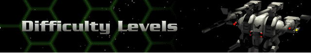

› |
› |
› |
Difficulty Levels |

| Easy | Introduces you to your duties as an officer in the UNItech Militiacorps. Places you in situations where you face Cybrids, although the missions are assigned with your rookie skills in mind. |
| Normal | This setting will test your skills as an officer. |
| Hard | This is the ultimate challenge for a Cyberstorm officer. The Cybrid forces will be more numerous and better trained early in your campaign. |